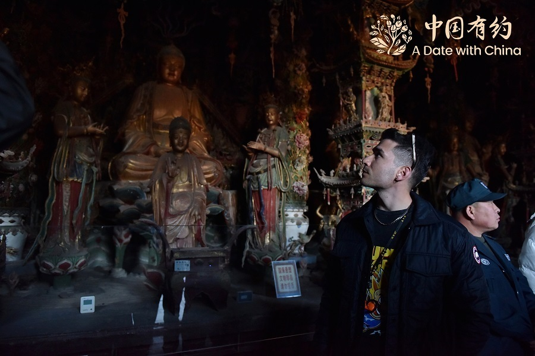

总方案总览
核心要求与统一设计原则，本方案全部按此标准执行。
| 要素 | 统一设计 |
|---|---|
| 出发返程 | 9/12（周六）上午航班出发（10:00-11:00 起飞，非早班机），9/16（周三）19:30后航班返沪；D1 不排景点，抵达即入住+欢迎晚宴 |
| 每日节奏 | 每天 1-2 个景点，统一 10:00 出发、午餐固定 12:00-13:00 开餐、16:00 前结束游览，下午留出休整/自由时间，不赶路 |
| 酒店 | 全程 2 家：平遥古城客栈 2 晚（9/12-13）+ 临汾市区酒店 2 晚（9/14-15），仅换 1 次酒店 |
| 餐饮标准 | 全程吃好住好：特色宴请 4 顿（欢迎晚宴/地方宴席）+ 每日高标准团餐，配地方风味 |
| 安全红线 | 全线不爬山、无悬崖栈道；壶口瀑布为护栏观景台平视参观；小西天为平地院落参观，无登高路段 |
| 信号保障 | 工作日（9/14-9/15）以成熟景区与市区为主，信号覆盖良好；最远点壶口瀑布排在周二（9/15），全程高速与旅游公路，无信号盲区 |
| 用车 | 全程头等舱座椅大巴（2+1 座椅布局），高速/主干道优先，颠簸路段提前告知 |
| 服务 | 全程固定全陪工作人员 1 名 + 当地地接导游 1 名，全程随队 |
| 团建 | 每晚轻量团建（歌舞宴/观演/篝火/手作/夜游），21:30 前收场，全员统一行动不分散 |
概方案概要总表
人均报价均含往返机票、酒店、门票、包车、餐食与全陪服务。危险因素按"安全第一"原则评估标注，供决策参考。
| 推荐序 | 线路 · 行程亮点 | 酒店 | 人均报价 | 危险因素 | 主要权衡 |
|---|---|---|---|---|---|
| ① 平遥+壶口 古城+大院+壶口+小西天 |
平遥客栈2晚+临汾酒店2晚仅换1次酒店、落地先游平遥古城、壶口/小西天收尾返程 | 2家 | ¥7,700-8,200 | 低-中壶口临崖观景台（护栏完备、防滑板）；9/16 小西天→太原机场约4h长途（山区高速为主） | 落地太原直达平遥（约1.5h）：9/13 乔家大院+平遥古城、9/14 古城旅拍团建+王家大院后南下临汾、9/15 壶口单日、9/16 小西天+北上机场返沪 |
预算说明：人均 1 万即可做出顶配体验（五星/准五星酒店 + 高标餐 + 最佳演出座位）；若按上限 1.5 万执行，可升级为国际五星连住、专属包场演出。
①平遥+壶口线 · 壶口瀑布 + 晋商古城 + 大院环线 + 临汾小西天
壶口瀑布、平遥古城、乔家/王家大院、临汾小西天四大主题点；平遥客栈 2 晚 + 临汾酒店 2 晚连住（全程 2 家酒店、仅换 1 次）。落地太原直达平遥；9/13 乔家大院+平遥古城，9/14 平遥古城旅拍团建+王家大院后南下临汾，9/15 壶口瀑布，9/16 小西天后北上太原机场返沪。全程每天 10:00 出发、午餐 12:00-13:00 开餐，平路为主、信号全稳。



每日行程（轻盈节奏）
| 日期 | 安排 | 交通 | 住宿 |
|---|---|---|---|
| 9/12 周六 | 上午航班（10:00-11:00 起飞，非早班机）上海直飞太原（约2.5h）→ 约13:00 抵太原武宿机场，地接接机 → 13:00-13:50 午餐（太原机场就近，晋味简餐）→ 14:00 高速大巴赴平遥（约100km，约1.5h）→ 约15:30 入住平遥古城客栈 → 傍晚 古城自由漫步（明清街）→ 晚上 平遥牛肉欢迎宴（团建第一趴·破冰） | ✈ 直飞 + 🚌 高速大巴 | 平遥古城客栈 |
| 9/13 周日 | 10:00 出发 → 乔家大院（平遥→祁县约40km，约50min，115元，平路院落，晋商大院网红打卡）→ 10:50-12:00 乔家大院游览（约1.2h） → 12:10-13:00 午餐 晋中风味（祁县县城，刀削面/栲栳栳）→ 13:10 返平遥（约50min）→ 14:00-17:30 平遥古城（通票125元：日昇昌票号、县衙、明清街，电瓶车环游不上城墙）→ 傍晚 返客栈休整 → 晚上 明清街分组夜游打卡+平遥牛肉小吃（团建第二趴） | 🚌 包车（平遥-祁县往返，平原高速） | 平遥古城客栈（连住第2晚） |
| 9/14 周一 | 10:00 出发 · 平遥古城收官团建 → 古城旅拍（汉服/晋商服饰换装+分组跟拍出片，约2h，全员参与）或推光漆器非遗体验（描金手作，成品带走）→ 12:20-13:10 午餐 平遥牛肉宴 → 13:20 出发赴王家大院（平遥→灵石约50km，约1h）→ 14:20-16:00 王家大院（55元，晋商第一院，规模更大，平路）→ 16:00 南下赴临汾（灵石→临汾约110km，高速约1.5h）→ 约17:30 入住临汾酒店 → 晚上 临汾夜市（牛肉丸子面/安泽豆腐，团建第三趴） | 🚌 包车（古城+高速南下，王家-临汾段） | 临汾酒店 |
| 9/15 周二 | 10:00 出发（9/15 壶口瀑布单日往返） → 临汾→吉县壶口瀑布（约130km，旅游公路+高速约2h，本地熟路司机）→ 12:00-13:00 午餐 黄河鲤鱼宴（吉县县城）→ 13:00-15:00 壶口瀑布（90元+景交车40元，护栏观景台，"黄河在咆哮"观景+集体合影）→ 15:00 返程临汾（约2h）→ 约17:00 回临汾 → 傍晚 临汾市区自由休整+伴手礼采购（牛肉丸子面/安泽豆腐）→ 晚上 酒店夜话会（轻量团建，不外出） | 🚌 包车（高速+旅游公路，壶口单日往返） | 临汾酒店（连住第2晚） |
| 9/16 周三 | 10:00 出发（9/16 小西天+返程日） → 临汾→隰县小西天（千佛庵悬塑艺术博物馆，约1.2h，门票50元）→ 11:10-12:40 小西天游览（明代悬塑艺术，约1.5h）→ 12:40-13:30 午餐（隰县县城）→ 13:30 北上赴太原机场（隰县→太原约290km，高速约4h，中途停靠服务区1-2次）→ 约17:30 抵太原武宿机场 → 19:30后航班返沪（约22:00 抵沪），送团 | 🚌 包车 + ✈ 直飞返沪 | — |
住宿与餐饮
- 平遥：古城内特色四合院客栈（临主街）2晚连住（9/12-13）；临汾：市区准四/五星酒店2晚连住（9/14-15）；全程 2 家酒店，仅换 1 次
- 餐饮：临汾牛肉丸子面/安泽豆腐、黄河鲤鱼宴、晋中面食（刀削面/栲栳栳）、大院农家宴、平遥牛肉宴
团建安排
- D1 平遥牛肉欢迎宴破冰 → D2 明清街分组夜游打卡（日昇昌寻宝任务）→ D3 古城旅拍或推光漆器体验（分组协作+非遗体验，全员参与）→ D4 壶口归来酒店夜话会（轻量复盘，不外出）→ D5 小西天返程日（车上影集复盘），每晚 21:30 前结束
用车与服务
- 头等舱座椅大巴全程随队；太原-平遥、平遥-祁县乔家往返、平遥-灵石王家-临汾、临汾-吉县壶口往返、隰县-太原机场 段均配山西本地熟路司机；9/14 灵石→临汾约1.5h、9/16 隰县→太原机场约4h，中途均停靠服务区；全陪工作人员+山西地接导游随行
危险因素与风险提示：
- 9/15 壶口往返日：临汾-吉县壶口往返约4h车程（旅游公路+高速，路线平缓无盘山），午餐 12:00-13:00 安排在吉县县城（避开景区高价餐）；观景台临崖全程护栏、湿滑段铺防滑板；壶口段风大水汽重，已备头等舱大巴+本地熟路司机+防风外套
- 9/16 小西天+返程日（全程最长车程日）：10:00 出发，临汾-隰县约1.2h、隰县→太原机场约4h（当日合计约5.5h车程，山区高速为主，中途停靠服务区1-2次）；约 17:30 抵机场，建议订 19:30 后航班（留足 2h 值机缓冲）；小西天位于隰县山区、气温偏低，备外套
- 古城内部分路段为石板路，电瓶车为主、步行区段路平，防滑鞋即可；除隰县山区段外无信号盲区
- 9月山西早晚温差大（8-24℃），备薄外套；小西天在山区晨温偏低、壶口段风大水汽重，加备防风外套
¥7,700-8,200
人均 · 20-25人
含 往返机票约1700-1900（上海↔太原）· 门票约477（平遥通票125+乔家115+王家55+小西天50+壶口90+景交车40）· 团建约150-250（古城旅拍 或 推光漆器体验）· 平遥客栈2晚+临汾酒店2晚 · 全程头等舱大巴+全陪 · 特色宴+高标团餐
结结论与建议
本方案人均 7.7k-8.2k，在 1 万预算内，结余可升级五星/餐标/演出座位。以下列出推荐理由与危险因素，供决策参考。
| 线路 | 选线 | 适合理由 | 危险因素 | 一句话点评 |
|---|---|---|---|---|
| ① 平遥+壶口 | 轻松、低危、信号稳、性价比最高 | 低-中壶口临崖观景台护栏完备；9/16 小西天→太原机场约4h长途（山区高速为主） | 平遥+临汾各2晚连住仅换1次酒店，落地先入平遥古城；乔家(9/13)、王家(9/14)分日单点不赶路；壶口/小西天收尾返程 |
决策建议：本方案以"轻松+低风险+信号好+最高性价比"为设计主线：平遥+临汾各 2 晚连住仅换 1 次酒店、每天 1-2 个景点、统一 10:00 出发且午餐固定 12:00-13:00、全程不爬山、工作日信号全稳。人均 1 万即可高配执行，结余可升级住宿与餐标。
下一步：确认本方案后，立即输出定点详细版——具体航班号与时刻、酒店名与房型、菜单清单、A/B两套报价（保底/高配）供审批；小西天悬塑需提前 30 天锁位。